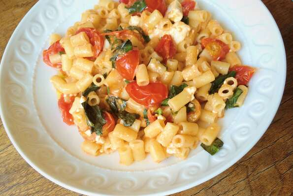

Easy Feta Tomato Pasta

Description
Feta, tomato, and olive oil are tossed with pasta in a super quick meal ready in just 20 minutes. Dinner doesn't get much quicker, healthier, or tastier than this! Boil any short pasta shape, make the quick and easy sauce while the pasta boils... and that's about it!
Ingredients
- 1 (12 ounce) package penne pasta
- ⅓ cup extra-virgin olive oil
- 16 ounces cherry tomatoes, halved
- salt and freshly ground black pepper to taste
- 2 cups crumbled feta cheese
- 3 tablespoons chopped fresh basil
Steps
- Bring a large pot of lightly salted water to a boil. Add penne and cook, stirring occasionally, until tender yet firm to the bite, about 11 minutes.
- Meanwhile, heat olive oil in a skillet over medium-high heat. Add tomatoes and salt to taste. Cook gently, stirring occasionally, until tomatoes are soft and have released their juices, 5 to 10 minutes.
- Drain the pasta and immediately add to the pan of tomatoes. Reduce heat to low and toss to coat. Add feta cheese, and basil and stir through. Season with salt and pepper. Serve immediately.